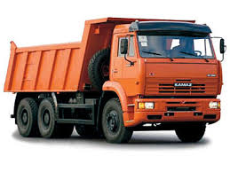

kamaz

კამაზი ჩამოყალიბდა 1969 წელს როგორც კამის დიდი ტვირთამწეობის სატვირთო ავტომანქანების მწარმოებელი ქარხნების კომპლექსი (საწარმოო გაერთიანება „კამაზი“), რომელიც 1990 წელს გარდაიქმნა სააქციო საზოგადოებად.პირველი ავტომანქანის კონვეიერიდან ჩამოსვლა მოხდა 1976 წლის 16 თებერვალს. მას შემდგომ გამოშვებულია 1,9 მილიონზე მეტი ავტომანქანა და დაახლოებით 2,6 მილიონი ძრავი. ყოველი მეორე ავტომანქანა სრული წონით 14–40 ტონა, რომლის ექსპლუატაციაც ხდება რუსეთსა და დსთ–ში, – არის კამაზი. ყოველი მეოთხე წარმოებული მანქანა ექსპორტირდება რუსეთის ფარგლებს გარეთ. კამაზის ექსპლუატაცია ხორციელდება მსოფლიოს 80 ქვეყანაზე მეტში.